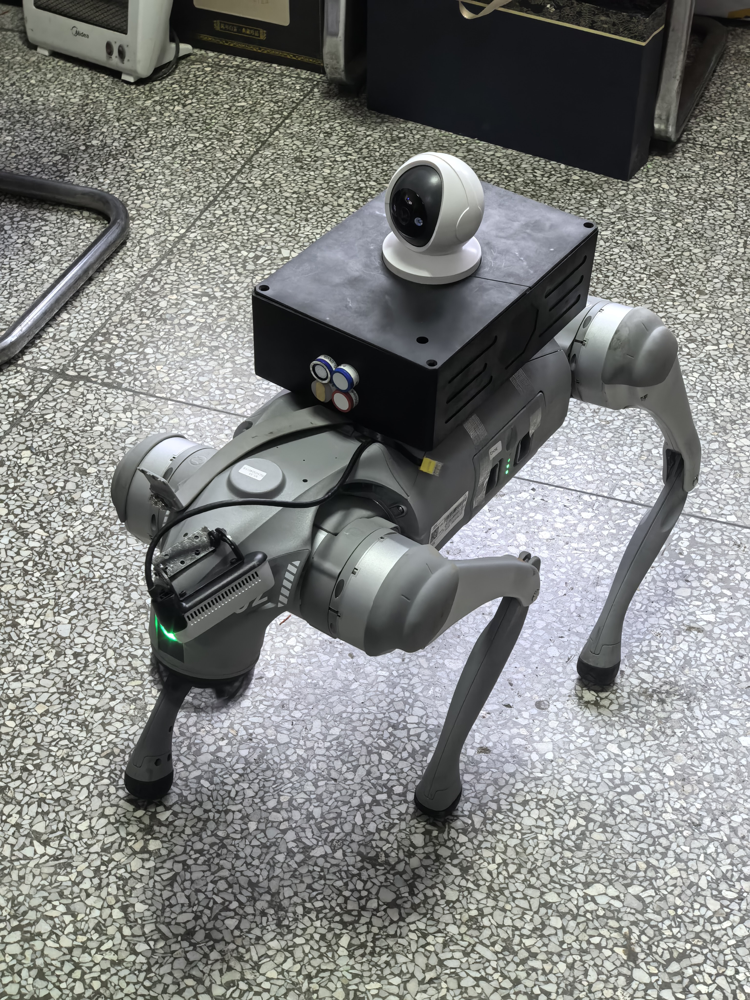
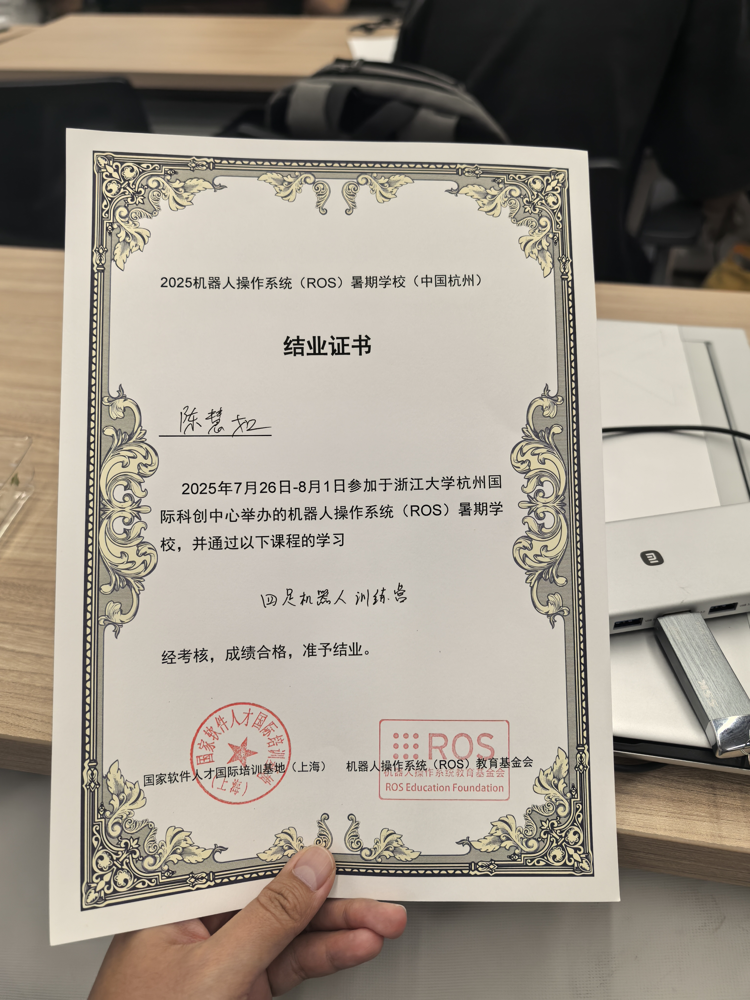
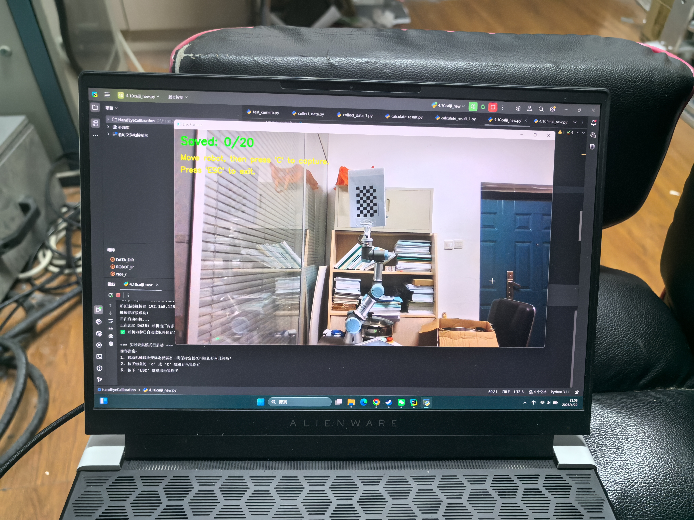
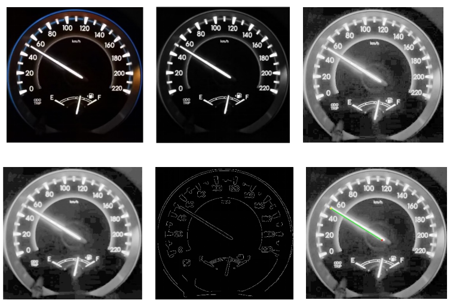
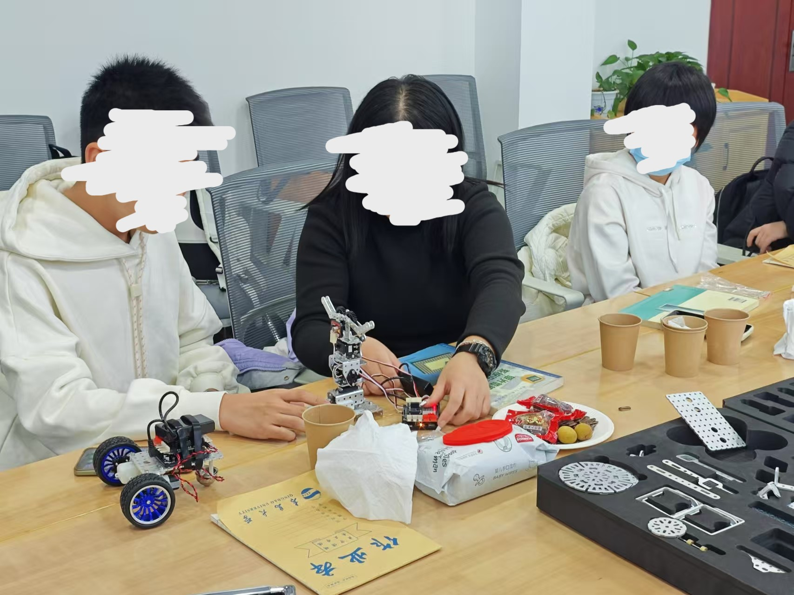

项目经历
Go2 EDU四足机器人巡检应用开发
2026.09起｜Python · SDK · DDS · 真机联调
对应能力：上位机开发设备通信模块集成功能调试

项目背景：面向地下商场巡检需求，基于宇树Go2 EDU开展应用层二次开发。
个人职责：编写和完善上位机控制程序，衔接机器人动作、摄像头与传感器信息，开展真机功能联调。
- 控制程序：使用Python，在AI辅助下完善程序；调用SDK、通过DDS通信下发机器人移动与摄像头云台控制指令。
- 信息接入：通过SSH连接设备，开展视觉模块与传感器信息接入，完成摄像头和气味传感器信息回传。
- 系统联调：在真机上检查控制下发与信息反馈，验证人工遥控下的巡检流程。
完成结果：已实现真机人工遥控巡检，覆盖移动、云台控制和传感器信息回传；地下商场为目标应用场景。
ROS2四足机器人应用实训
2025.07｜杭州 · 浙江大学校园｜ROS暑期学校 · 宇树四足机器人
对应能力：Linux环境使用ROS2节点通信视觉功能接入模型训练实操

个人职责：在宇树工程师指导下实际操作、理解并修改示例程序，完成感知结果与机器人动作衔接的实训任务。
- 环境与通信：使用Linux(Ubuntu 20.04)系统，配置ROS2、SDK相关环境，完成节点间数据传输。
- 视觉控制：调用MediaPipe识别手势，将识别结果映射为Go2运动指令。
- 训练与推理：使用YOLO11进行目标检测模型训练和推理验证；进行机器人仿真运控实验。
完成结果：完成实训考核并结业，实际操作了环境配置、节点通信、感知接入、指令下发与功能验证等环节。
TMS机器人视觉定位与手眼标定
2026.03-2026.06｜UR3 · 深度相机 · Eye-to-Hand · 坐标变换
对应能力：技术文档理解文献方法实现标定实验设计空间坐标配准

项目背景：围绕TMS经颅磁刺激康复机器人相关任务，开展深度相机数据采集及相机与机械臂之间的空间配准。
个人职责：查阅论文与技术文档，独立理解并实现标定相关方法，设计实验并求取空间变换关系。
- 方法理解与实现：在没有课题经验的情况下，梳理技术方法及坐标关系，将资料中的方法应用到设备任务中。
- 实验与采集：结合机械臂、深度相机和标定板设计标定实验，完成深度数据采集与眼在手外标定流程。
- 坐标关联：建立相机坐标系与机械臂基准坐标系之间的关系，获得空间变换矩阵。
完成结果：获得相机到机械臂基准坐标系的变换关系，形成独立理解技术资料、实现方法并开展标定实验的实践。
基于图像处理与霍夫变换的表盘自动读数
2024.12｜独立图像处理小项目｜MATLAB · Canny · Hough
对应能力：文献方法理解图像处理实现参数调试结果验证

项目背景：自主设计课题并完成
个人职责：通过查阅论文和技术文档，独立完成图像处理、指针识别与读数实现，并调整参数验证处理结果。
- 流程实现：使用Matlab处理图像，串联灰度化、直方图规定化、中值滤波及Canny边缘检测，得到后续指针提取所需信息。
- 特征与数值：利用Hough变换检测直线，提取指针端点和角度，建立角度与表盘刻度的映射，输出对应读数。
- 参数与验证：调整检测峰值、线段等相关参数，结合处理过程和读数结果检查方法效果。
- 成果整理：完成8页项目报告，包含处理逻辑、代码片段、参数与过程图。
完成结果：独立完成图像到读数的示例流程，报告展示0 km/h与50 km/h样例的处理及输出。
探索者机器人平台搭建与教学
2025.01｜机器人结构搭建 · 编写烧录驱动 · 设计课程并教学

个人职责：在参考结构基础上改良并搭建装置，完成控制实践，整理教学材料并在校内进行教学。
- 基于“探索者”机器人套件搭建遥控车、机械臂等装置，结合可视化编程实现控制逻辑。
- 开展蓝牙遥控、加装传感器等实践，将结构、感知与控制环节联系起来。
- 把搭建步骤与工作原理整理成讲义，梳理机器人系统设计逻辑，面向高中生开展实践讲解。
完成结果：完成装置搭建与教学实践，积累了讲义、活动照片等成果材料。
求职投递信息统计Agent搭建
个人工具应用｜Agent搭建 · API调用
搭建工作：围绕个人求职过程中的投递信息统计需求搭建Agent、调用API，实现信息抓取、整合，便于梳理查看进度，转化为网页应用。
经验积累：具有从实际使用需求出发，搭建并使用AI应用工具的实践。